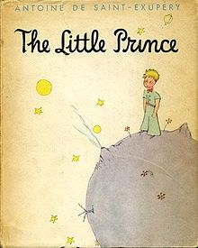

延伸閱讀
小王子 Le Petit Prince
作者： 安托萬·聖修伯里 Antoine de Saint-Exupéry
出版社：雷納爾暨希區考克 Reynal & Hitchcock
出版日期：1943年4月6日

在《我想吃掉你的胰臟》中，雖然男主角是個每天都沈浸在小說世界的學生，但在整個故事中，比較有戲份的書就是女主角借給男主角的這本《小王子》，我認為其中必定有一些特別的含意，以下就簡單寫寫兩部作品可能會有所關連呼應的部份。
一、對不變的事物的珍視：
小王子愛著他的玫瑰花，即使它看起來和其他所有玫瑰沒有區別。這種愛和關注可能象徵著在《我想吃掉你的胰臟》中主角對山內櫻良的情感。他看到了她獨特的個性，並愛著她，即使她將會像任何其他生命一樣終將消逝。
二、對生命的傷感和接受：
小王子的旅程和他的生命經歷都充滿了哀傷，但他也學會了接受。這種主題可能與山內櫻良的處境相呼應，她在面對絕症時，表現出了勇氣和接受，並嘗試以最好的方式過好每一天。
三、對孤獨的理解和同情：
《小王子》的故事中充滿了孤獨的元素，小王子在各個星球的旅程中常常獨自面對。這種孤獨感可能也反映在《我想吃掉你的胰臟》的主角上，他們都面臨著生命中的嚴峻挑戰，並且必須學會自己面對。
四、生命觀：
《小王子》中的一句名言：“人只有用心才能看清事物，真正重要的事物眼睛是看不見的。”這也可能是對山內櫻良生命觀的隱喻，即她儘管生活在疾病的陰影下，但是她能夠看到生活中的美好，並積極地活著。